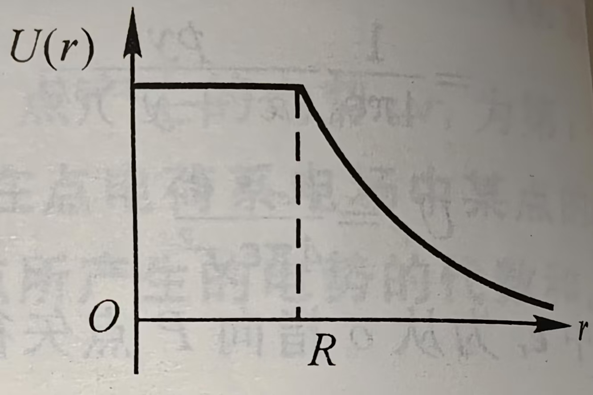
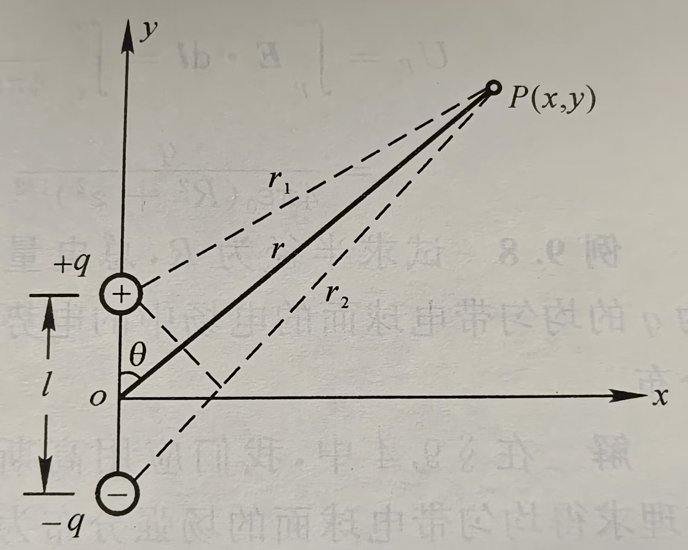
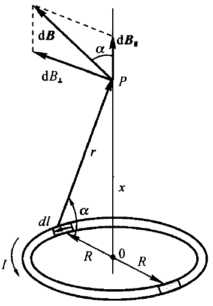
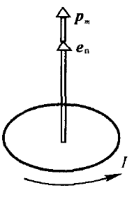

第九章 真空中的静电场
库仑定律

F=4πϵ01r122q1q2e12
电偶极子
一对等量异号点电荷+q和−q，相距为l。当从观察点到两电荷连线的距离x≫l时，则这一对点电荷称为电偶极子
定义电偶极矩pe=ql，l的方向由负电荷指向正电荷
电偶极子中垂线上距两电荷中点O距离为x处的场强为
E=−4πϵ01x3pe
常见场强公式
均匀带电直线外任意一点的场强（2021 T12）

一均匀带电直线，长为L，带电量为q，线外一点P到直线的垂直距离为a，P与直线两端的连线与直线间的夹角分别为θ1,θ2，如图所示。求P点的场强
解：
选取如图所示的坐标系，有dq=Lqdx
该电荷元在P点产生的场强的大小为
dE=4πϵ01Lr2qdx
有dEx=dEcosθ,dEy=dEsinθ
Ex=∫dEx=∫dEcosθ=∫4πϵ01Lr2qcosθdxEy=∫dEy=∫dEsinθ=∫4πϵ01Lr2qsinθdx
r=sinθa,x=−acotθ,dx=sin2θadθ
Ex=∫θ1θ24πLϵ0aqcosθdθ=4πLϵ0aq(sinθ2−sinθ1)Ey=∫θ1θ24πLϵ0aqsinθdθ=4πLϵ0aq(cosθ1−cosθ2)
常见带电体的电场强度公式
均匀带电球面
总电量为Q，半径为R的均匀带电球面：
E=⎩⎨⎧4πϵ0r2Q,0,球面外球面内
均匀带电球体
总电量为Q，半径为R的均匀带电球体：
E=⎩⎨⎧4πϵ0r2Q,4πϵ0R3Qr,r>Rr<R
无限长均匀带电圆柱面
线电荷密度为λ，半径为R的无限长均匀带电圆柱面：
E=⎩⎨⎧2πϵ0rλ,0,柱面外柱面内
无限长均匀带电圆柱体
线电荷密度为λ，半径为R的无限长均匀带电圆柱体：
E=⎩⎨⎧2πϵ0rλ,2πϵ0R2rλ,柱体外柱体内
无限大均匀带电平面
面电荷密度为σ的无限大均匀带电平面：
E=2ϵ0σ
电通量
Φe=∫sE⋅dS
高斯定理
通过任意闭合曲面的电通量等于该曲面所包围的所有电量的代数和除以ϵ0
Φe=∫sE⋅dS=ϵ01i∑qi
常见电势公式
球壳

半径为R，总电量为q的均匀带电球面形成电场中电势的分布情况为
U(r)=⎩⎨⎧4πϵ0Rq,r≤R4πϵ0rq,r>R
均匀带电球体
半径为R，总电量为q的均匀带电球体形成电场中电势的分布情况为
U(r)=⎩⎨⎧4πϵ0rq,8πϵ0Rq(3−R2r2),r>Rr≤R
电偶极子
两点电荷为±q，相距为l的电偶极子电场中任一点P的电势

Up=4πϵ01x2+y2qlcosθ
证明
UP=U1+U2=4πϵ01(r1q−r2q)=4πϵ0q(r1r2r2−r1)
因为r≫l,则有r2−r1≈lcosθ,r1r2=r2
因而
Up=4πϵ0qr2lcosθ=4πϵ01x2+y2qlcosθ
无限长均匀带电直线
电荷线密度为λ的无限长均匀带电直线，距带电直线r的p点的电势为
Up=−2πϵ0λlnr+C
证明
无限长均匀带电直线周围的电场强度为
E=2πϵ0rλ
如果选无穷远处作为电势零点，经过积分可知各点电势都是无穷大。
我们可以选取距带电直线r0处的p0点的电势为零参考点。
Up=∫pp0Edl=∫pp02πϵ0rλdr=−2πϵ0λlnr+2πϵ0λlnr0
可以表示为
Up=−2πϵ0λlnr+C
电场强度和电势的关系
E=−∇U
第十章 静电场中的导体和电介质
静电平衡
基本性质
- 导体内部场强处处为0
- 导体表面外侧，紧靠表面处的场强处处与表面垂直
- 导体是个等势体，导体表面是个等势面
带空腔的导体

若导体内有空腔,而腔内无其他带电体（如右图），则不难证明
- 导体空腔内表面无电荷存在
- 导体空腔内场强处处为0
电容器的电容
两导体带有等量异号的电荷Q，导体间的电势差为UA−UB
C=UA−UBQ
平行板电容器
C=ϵ0dS
圆柱形电容器
两半径分别为RA和RB，长为l的圆柱面的电容

C=lnRARB2πϵ0l
证明
令内外圆柱面单位长度的带电量分别为+λ和−λ
由高斯定理，取半径为r的圆柱面(RA<r<RB)
E=2πϵ0rλ
UA−UB=∫RARBEdr=∫RARB2πϵ0rλdr=2πϵ0λlnRARB
C=UA−UBQ=UA−UBλl=lnRARB2πϵ0l
球形电容器
半径分别为RA和RB的同心的金属球壳组成的球形电容器的电容
C=RB−RA4πϵ0RARB
证明
设内外球壳带电荷+Q和−Q
由高斯定理，取半径为r的球面(RA<r<RB)
E=4πϵ0r2Q
UA−UB=∫RARBEdr=∫RARB4πϵ0r2Q=4πϵ0Q(RA1−RB1)
C=UA−UBQ=RB−RA4πϵ0RARB
电介质
电介质对电场的影响
U=ϵrU0
C=ϵrC0
E=ϵrE0
ϵr为仅与电介质有关的常数，称为电介质的相对介电常数
电极化强度
对大多数各项同性电介质来说，P和E有如下关系
P=ϵ0χeE
极化面密度
均匀电介质极化时，极化电荷面密度σ′等于极化强度在该点表面处的法向分量。即
σ′=∣P∣cosθ=P⋅en
其中P为极化强度，en为该点法线方向单位矢量
电介质中的场强

χe为电极化率
1+χe=ϵr
σ′=σ0(1−ϵr1)
从而
P=ϵ0χeE=ϵ0(ϵr−1)E
电介质中的高斯定理
通过电场中任意闭合曲面的电位移通量，等于该闭合面所包围的自由电荷的代数和
∮DdS=∑q0
其中D为电位移
D=ϵ0E+P=(1+χe)ϵ0E=ϵrϵ0E=ϵE
其中ϵ称为电介质的介电常数或电容率
电场的能量
能量密度积分法
单位体积电场贮存的能量we为
we=21ϵE2=21DE
从而整个电场贮存的能量为
W=∫Vwedv
等效电容能量公式法
W=21CQ2=21QU=21CU2
带电体的静电能公式
W=21∫qUdq
例
均匀带电球面，半径为R，总电量为Q，求这一带电系统的能量。
解一：
带电球面在球外产生电场，电场和能量密度分别为
E=4πϵ0r2Q,w=21ϵ0E2
dV=4πr2dr
W=∫R∞wdV=8πϵ0RQ2
解二：
C=4πϵ0R,W=21CQ2=8πϵ0RQ2
解三：
W=21∫Udq=21∫0Q4πϵ0RQdq=8πϵ0RQ2
第十一章 稳恒电流
电流和电流密度
电流强度I和电流密度矢量j的定义
I=dtdq,j=dSdI
也即dI=j⋅dS,I=∫Sj⋅dS
电流与漂移速度
I=envdΔS,j=envd
电流连续性方程及稳恒的条件
电流连续性方程
∮sj⋅dS=−dtdq
稳恒条件
∮sj⋅dS=0
欧姆定律的微分形式
导体元两端的电势差
ΔU=EΔl=jΔSΔR
即
j=ΔRΔSΔlE=ρ1E=γE
矢量形式为j=γE
γ为导体的电导率
第十二章 稳恒磁场
洛伦兹力
F=qv×B
标量式为
F=qvBsinθ
其中θ为速度矢量v与磁感应强度矢量B之间的夹角
毕奥-萨伐尔定律

在导线中沿电流方向取一长为dl的矢量线元dl，此线元取得足够小，方向与线元内电流密度的方向相同，称Idl为电流元。
dB=4πμ0r3Idl×r
计算某点场强时积分即可。
常见的稳恒磁场
载流长直导线

设真空中一长直导线MN中通有电流I。计算距导线为a的场点P的磁感应强度。
取P点至导线的垂足O为坐标原点。在载流导线上任取一电流元，它在P点产生的磁感应强度dB的大小为
dB=4πμ0r2Idlsinθ
则有P点的磁感应强度为
B=∫LdB=∫L4πμ0r2Idlsinθ
其中
l=−tanθa,r=sinθa,dl=sin2θadθ
代入上式可以得到
B=∫θ1θ24πaμ0I=4πaμ0I(cosθ1−cosθ2)
对于无限长直导线，θ1=0,θ2=π
B=2πaμ0I
载流圆线圈

设真空中有一圆形线圈，其半径为R，通有电流I。下面计算其轴线上P点处的磁感应强度。
如右图，在载流圆线圈上任取一电流元，它在P点产生的磁感应强度dB的大小为
dB=4πμ0R2+x2Idl
显然dB⊥相互抵消，dB∥互相加强。
B=∫dBcosα=∫02πR4πμ0R2+x2IR2+x2Rdl=2(R2+x2)23μ0IR2
载流直螺线管

对于点P，
B=2μ0nI(cosβ2−cosβ1)
螺线管无限长时β1=π,β2=0
B=μ0nI
螺线管的两个端点，相应的有β1→2π,β2→0和β1→π,β2→2π，两种情况都有
B=2μ0nI
载流导体薄板
无限大导体薄板可视为无限长直导线。
B=2πaμ0I
载流线圈的磁矩和磁偶极子

将场点到场源的距离远大于线圈尺寸的载流线圈称为磁偶极子。
假设上述载流圆线圈有N匝，且x≫R，表达式可变为
B=2x3Nμ0IR2=2πx3Nμ0IS(S=πR2)
类似电偶极子的电矩，定义磁矩为
pm=NISen，其中en为线圈平面正法线方向上的单位矢量.
引入磁矩后可以将磁感应强度表达式改写为
B=2πx3μ0pm
运动电荷的磁场

在载流导体中取一长为dl的电流元，它的截面积为S，单位体积内有n个带电粒子，每个带电粒子的电量为q，以平均漂移速度在导体中运动,即I=nqSv
dB=4πμ0r3Idl×r=4πμ0r3nqSvdl×r
电流元dl内有dN=nSdl个以速度运动着的带电粒子，电流元Idl所产生的磁场，就是dN个运动电荷产生的磁场的总和。因此，每一个以速度运动的电荷所产生的磁感应强度为
B=dNdB=4πr3μ0qv×r
磁感应强度方向如上图所示。
磁通量

Φm=∫SB⋅dS
在匀强磁场可以写成
Φm=BScosθ
取闭合曲面的外法线方向为法线正方向n。在磁感应线穿出曲面处，B与n的夹角为锐角，相应的磁通量为正；在磁感应线穿入曲面处，B与n的夹角为钝角，通过该处的磁通量为负，如图所示。
磁场的高斯定理
磁场中任意闭合曲面的磁通量恒等于零，即
Φm=∮SB⋅dS=0
安培环路定理
在稳恒磁场中，磁感应强度B沿任意闭合回路的线积分，等于闭合回路所包围电流代数和的μ0倍，其数学表达式为
∮LB⋅dl=μ0I内
常见的稳恒磁场2

无限长载流圆柱体
P点在圆柱体外时：
B⋅2πr=μ0I
B=2πrμ0I
P点在圆柱体内时：
B⋅2πr=μ0R2Ir2
B=2πR2μ0Ir
载流螺绕环

设螺绕环的总匝数为N，平均半径为R，导线中通过的电流为I，当环上线圈绕得很紧密时，磁场几乎全部集中在管内，在与环共轴的圆周上各点的磁感应强度的大小都相等，方向沿圆周切向。
B⋅2πr=μ0NI
B=2πrμ0NI
若环的截面半径比环的平均半径小得多，上式中的r可用平均半径R代替，则环内磁感应强度为
B=2πRμ0NI
对于螺绕环外的空间,穿过这个回路的总电流为零,故得
B=0
无限长载流螺线管

螺线管每单位长度有n匝
∮LB⋅dl=∫abBdl+∫bcBdl+∫cdBdl+∫daBdl=Bl=μ0nlI
B=μ0nI
安培力

F=∫0lIdl×B
安培力的特性
如右图，作用在整个导线上的力与作用在通有同样电流，长度为(2l+2R)的直导线上的安培力相等。可以证明,无论中间一段导线的形状如何,其结果都一样。
长直导线之间的作用力

每单位长度所受的力为
dl2dF2=2πdμ0I1I2
电流同向相互吸引，异向相互排斥。
在国际单位制中，电流强度是基本量，其单位“安培”就是利用平行电流间相互作用的安培力来定义的。